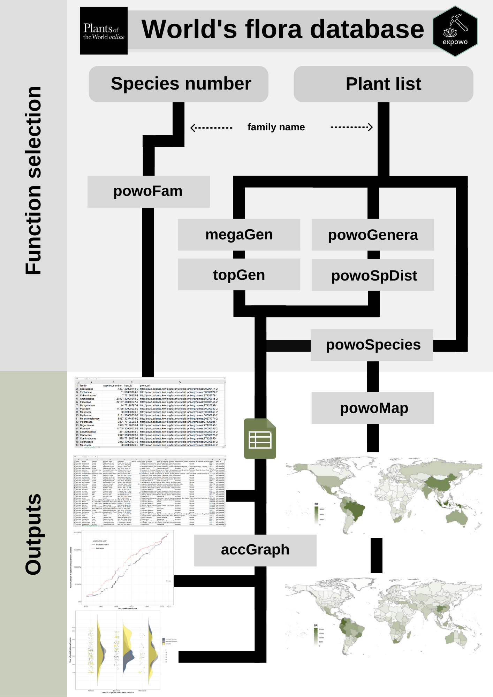
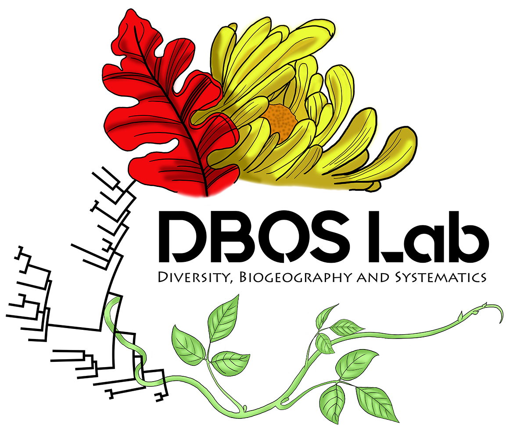

An R package for mining species list, diversity estimates, and distribution data for any genus or family of vascular plants from the World Checklist of Vascular Plants (WCVP) available through RBG Kew’s Plants of the World Online (POWO).
Overview
The main goal of the expowo package is to retrieve information about the diversity and distribution of any plant family as publicly available at the taxonomically verified database Plants of the World Online (POWO). It can return a comma-separated values (CSV) file with the number of accepted species and country-level distribution for any genus as well as the full list of accepted species in any genus or family, their authorship, original publication and global distribution. The functions powoMap and accGraph can automatically create global maps for any taxon level and accumulation graphics of species discovery, respectively, while endemicMap, discoveryGraph and introGraph map the centres of endemism, plot when species were discovered and renamed, and show where species were introduced from and to.
Data source
Since version 3.2, the mining functions read by default the bulk data of the World Checklist of Vascular Plants (WCVP), which is the taxonomic backbone of POWO (source = "wcvp"). The WCVP file (about 90 MB) is downloaded from Kew only once, at the first search, and then cached on disk at tools::R_user_dir("expowo", "cache"). It is downloaded again only when Kew releases a new WCVP version, so any following search runs in a few seconds, even for very large families.
The output tables keep exactly the same columns as the earlier versions of expowo, in which the source HTML page of each taxon at POWO was mined. That mining approach is still available with source = "powo", but it is much slower and the POWO website may block automated requests.
library(expowo)
# Default: WCVP bulk data
powoSpecies(family = "Martyniaceae",
synonyms = TRUE,
country = c("Argentina", "Brazil", "French Guiana"))
# Mining the POWO source pages of each taxon
powoSpecies(family = "Martyniaceae",
source = "powo")Before using expowo
Update R and RStudio versions
Please make sure you have installed the latest versions of both R (Mac OS, Windows) and RStudio (Mac OS / Windows: choose the free version).
Installation
You can install expowo from CRAN by just running the following R code:
install.packages("expowo")Otherwise, you can install the latest development version of expowo from GitHub using the devtools package with the following R code:
install.packages("devtools")
devtools::install_github("DBOSlab/expowo")OBS.: To download the development version, you will need to have the Git software installed. And if your operating system is Microsoft Windows, you will also need to download the Rtools.
Usage
The package’s major functions (powoFam, powoGenera, powoSpecies, powoSpDist, megaGen, and topGen) only require the name of the target family (or a vector with multiple family names). These major functions work with other minor functions (getInfo and saveCSV), with auxiliary and defensive functions to mine the plant data. Respectively, getInfo mines the taxonomic information of each genus, the total number of species within any genus, and does a complete search for native and introduced country-level distribution for any genus and species, while saveCSV fastly writes CSV files within the current date subfolder of a provided specific directory. With these extracted distributions, it is also possible to automatically generate global maps according to political country and botanical countries with the function powoMap. Additionally, if you want to plot new species discoveries within any genus after downloading the data using powoSpecies, it is also possible to do it automatically using accGraph. The global endemism of any group can be mapped with endemicMap, the number of species described and synonyms published over time can be plotted with discoveryGraph, and the introductions of species between continents with introGraph. See the examples on how to use the expowo’s functions for mining and using data regarding the global plant diversity and distribution in the ‘Articles’ section in our site.

Documentation
A detailed description of the expowo’s full functionality is available here.
The expowo package is being continuously constructed. If you want to make suggestions, let us know! We hope it will be helpful for your botanical research!
Citation
Zuanny, D. C., B. Vilela, P. W. Moonlight, T. E. Särkinen, and D. Cardoso. 2024. expowo: An R package for mining global plant diversity and distribution data. Applications in Plant Sciences 12: e11609. https://doi.org/10.1002/aps3.11609
